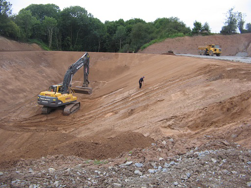

BALLYNAHINCH · WORKING ACROSS IRELAND
Groundwork.
Done with purpose.
Bulk earthworks, demolition, civil engineering and operated plant hire. Practical support from site preparation to the next phase.

WHAT WE DO
Set your project in motion.
Contractors & plant hire
People, plant.
And a practical plan.
A family-run contracting and plant hire business based in Ballynahinch, serving private and commercial clients across Northern and Southern Ireland. The work covers bulk earthworks, demolition, civil engineering, geotechnical services and heavy plant hire with operators.
Get to know the workshop ↗SELECTED WORK
On site. At work.
GETTING STARTED
A few useful
answers.
What should I include in an enquiry?
Tell the team where you are, what you need and your intended timing. Basic dimensions, drawings or a few photographs can help explain your requirements.
How do I get a quotation?
Speak with the team to agree the scope, practical details and proposed timing. Prices and availability are confirmed directly for your requirements.
Can I discuss an individual design?
Discuss your application, site or vessel requirements with the team to establish the right approach.